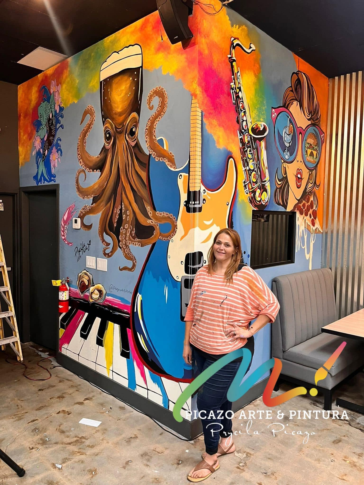
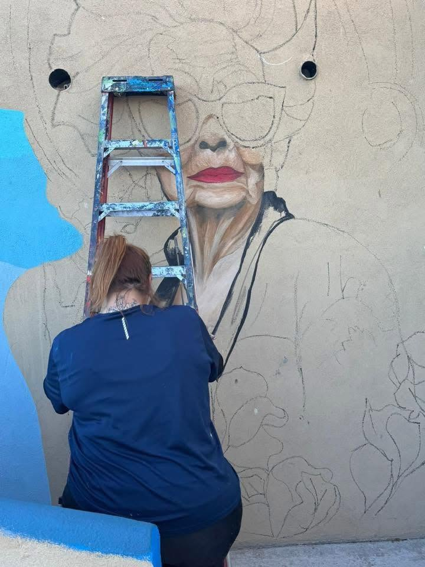
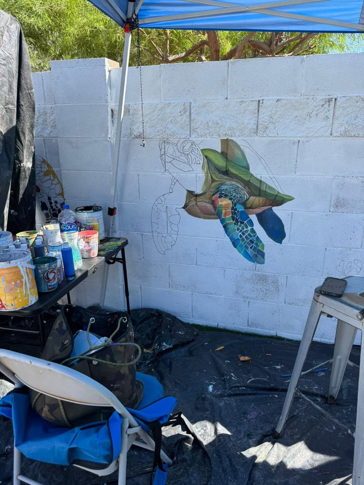
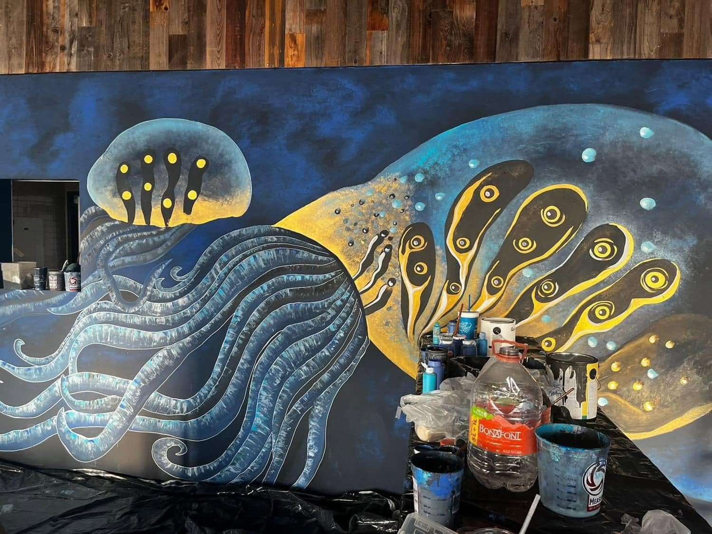

Pintando Yuma, Somerton y la región fronteriza, un muro y un lienzo a la vez.

“Amo el arte y tengo la firme convicción de que todo lo visual que te rodea puede influir negativa y positivamente en tu interior. Debemos dar esa importancia a todos aquellos a quienes queremos expresarles amor, alegría y esperanza de manera visual.”
Esa convicción se nota en cada muro que Picazo toma — ya sea la fachada completa de un edificio, una escena tropical para la terraza de un restaurante, o el retrato de la mascota de alguien. Arte contemporáneo en lienzo, murales personalizados, y todo lo demás, siempre pintado a mano, siempre en el lugar.



Murales por Yuma, AZ y Somerton, AZ, con piezas comunitarias que llegan hasta el cruce fronterizo de San Luis — además de encargos en lienzo que se envían o cuelgan en cualquier lugar.
Mira cómo se arma un encargo, desde el primer boceto hasta la revelación final.
Ver Murales y Encargos